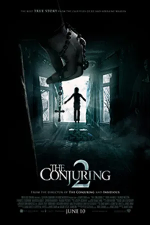

Watch order · 10 films
Conjuring movies in order.
The full Conjuring Universe in story order, from 1950s Romania to the Warrens’ final case. Includes the Annabelle and Nun spin-offs.
Kuvacult watchlist key
@KVCJR
Enter this code in Kuvacult to create this watchlist, already in order.
1Copy the key above.
2Open Kuvacult and go to Watchlists.
3Choose “Add from key” and paste it.
4The list appears in order, ready to share with friends.
The Conjuring in order
 1
1The Nun
 2
2Annabelle: Creation
 3
3The Nun II
 4
4Annabelle
- 5
The Conjuring
- 6
Annabelle Comes Home
- 7
The Curse of La Llorona

8The Conjuring 2
- 9
The Conjuring: The Devil Made Me Do It
- 10
The Conjuring: Last Rites
Questions
What is the first Conjuring movie in chronological order?
The Nun. It is set in 1952 and tells the origin of the demon Valak.
Where do the Annabelle movies fit?
Annabelle: Creation is set in 1955, Annabelle in 1967, and Annabelle Comes Home in 1972, right after The Conjuring.
More chronological orders


Watch it with your friends.
Kuvacult is a free movie tracker with shared watchlists, a veto game for picking movie night, and séances for watching together.